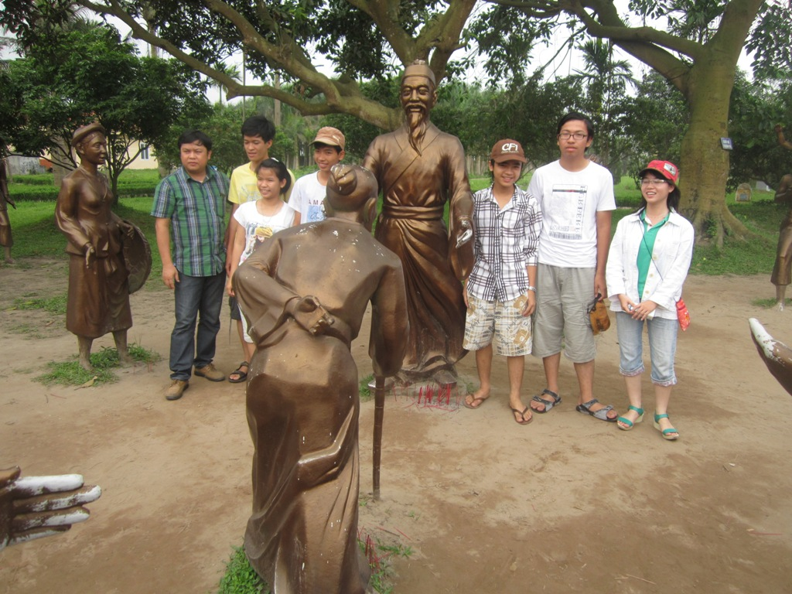

TRƯỜNG THPT CHUYÊN NGUYỄN BỈNH KHIÊM ĐẠT THÀNH TÍCH CAO TẠI KÌ THI HỌC SINH GIỎI CÁC TỈNH DUYÊN HẢI VÀ ĐỒNG BẰNG BẮC BỘ LẦN THỨ VI TẠI HẢI PHÒNG VÀ KÌ THI ÔLIMPIC TOÁN HÀ NỘI MỞ RỘNG VIẾT TẮT LÀ HOMC

Lần cập nhật cuối lúc Thứ ba, 17 Tháng 9 2013 07:53 Viết bởi Administrator Thứ năm, 25 Tháng 4 2013 09:13
Trong hai ngày 20 và 21 tháng 04 vừa qua, Trường THPT chuyên Nguyễn Bỉnh Khiêm đã tham gia kỳ thi chọn học sinh giỏi các tỉnh duyên hải đồng bằng Bắc bộ. Đây là kỳ thi được tổ chức vào tháng Tư hàng năm nhằm tạo sân chơi riêng để học sinh các trường chuyên có dịp giao lưu và thử thách năng lực học tập môn chuyên; tiếp cận và làm quen với mức độ vận dụng kiến thức, kĩ năng thi học sinh giỏi quốc gia cũng như rút kinh nghiệm cho công tác bồi dưỡng học sinh giỏi giữa các trường chuyên trong khu vực.
Trường được xếp Vị thứ 12 toàn đoàn
Sau hơn 10 năm thành lập, Trường THPT chuyên Nguyễn Bỉnh Khiêm cũng đã có 10 lần tham gia kì thi Ôlimpic truyền thống 30/04 do các tỉnh phía Nam tổ chức dành cho các trường THPT chuyên và không chuyên thuộc khu vực miền Nam và miền trung trung bộ. Qua các kì thi đó, học sinh của trường cũng đã khẳng định được trình độ năng lực của mình với bảng thành tích rất đáng tự hào và trường luôn được xếp vị trí cao trong bảng tổng sắp các đơn vị đạt thành tích xuất sắc của kì thi.
Năm nay, trên cơ sở duy trì và phát huy truyền thống của các kì thi Ôlimpic và qua tìm hiểu tính chất kì thi học sinh giỏi khu vực Duyên hải đồng bằng Bắc bộ, nhận thấy đây là kì thi có thể giúp học sinh có điều kiện thử thách “trận mạc” rất thiết thực chuẩn bị nguồn cho đội tuyển thi học sinh giỏi quốc gia hàng năm, nhà trường đã mạnh dạn quyết định tổ chức cho học sinh dự thi . Đoàn dự thi gồm 11 thầy cô giáo và 45 học sinh khối lớp 10 và 11 các môn chuyên: Ngữ văn, Toán, Anh, Lý, Hóa , Sinh , Tin – mỗi đội có 06 học sinh và đội tuyển môn Lịch sử 11 có 03 học sinh tham gia.
Tham gia kì thi năm nay, ngoài các trường chuyên của các tỉnh thuộc khu vực Duyên hải đồng bằng Bắc bộ còn có 2 trường thuộc khu vực miền Trung đó là Trường chuyên Quốc học Huế và Trường THPT chuyên Nguyễn Bỉnh Khiêm Quảng Nam. Đây là lần đầu tiên tham gia thi đấu với các trường chuyên bạn ở khu vực phía Bắc, trong đó hầu hết đều là các trường có bề dày lịch sử và bề dày thành tích trong các giải khu vực, giải quốc gia và quốc tế, nên tinh thần thi đấu vẫn là “nỗ lực hết mình, cố gắng hết sức và luôn tự tin, luôn hi vọng” và mục tiêu đặt ra cho thầy và trò của trường chỉ là tham gia để “học hỏi là chính”!
Lễ tổng kết, trao huy chương
Tuy nhiên, kết quả đạt được hơn cả mong đợi từ kì thi này đã khiến thầy và trò của trường rất đỗi phấn khởi, tự hào: Trường THPT chuyên Nguyễn Bỉnh Khiêm xếp vị thứ 12 toàn đoàn với tổng số 39 giải (gần 85%HS dự thi có giải): Trong đó có: 21 huy chương và 18 giải khuyến khích. Có 03 huy chương Vàng thuộc các môn Hóa 10, Lý 11 và Ngữ văn 10; 09 Huy chương Bạc các môn Toán 10(2),Toán 11; Lý 10, Hóa 10, Hóa11(2), Anh 11 và Sử 11; 09 Huy chương Đồng thuộc về các môn Toán 10, Toán 11, Lý 10 (2), Văn 10 (2), Văn 11, Sinh 10, Sử 11.
Nhận huy chương
Kỳ thi Olympic Toán Hà Nội mở rộng (Hanoi Open Mathematics Competition - viết tắt HOMC) là kỳ thi tổ chức hàng năm vào cuối tháng 3 dương lịch dành cho học sinh THCS (lớp 8) và học sinh THPT (lớp 10). Học sinh tham dự kỳ thi là những học sinh vừa giỏi Toán vừa giỏi tiếng Anh (thi Toán bằng tiếng Anh). Học sinh tự nguyện đăng ký ở địa phương (qua Phòng Giáo dục và Sở Giáo dục Đào tạo), địa phương lập đội tuyển giới thiệu với Ban tổ chức cuộc thi, đều được dự thi. Thi HOMC được tổ chức từ năm 2004, do Hội Toán học Hà Nội khởi xướng và chủ trì, nhằm động viên và khích lệ phong trào học Toán của học sinh trung học, đồng thời tập dượt, tạo điều kiện để học sinh làm quen và hội nhập quốc tế về giáo dục Toán học. Năm nay cũng là năm trường THPT chuyên Nguyễn Bỉnh Khiêm đăng kí dự thi lần đầu tiên và có 05 học sinh lớp 10 chuyên Toán tham gia. Kì thi khu vực miền trung – Tây Nguyên được tổ chức tại Trường THPT chuyên Nguyễn Du thành phố Buôn Mê Thuột. Kết quả cả 05 học sinh dự thi đều đạt huy chương. Trong đó, có 3 huy chương Bạc và 02 huy chương Đồng.
Học sinh chờ tổng kết trao giải
Có thể nói, đây là kết quả của những cố gắng nỗ lực không ngừng trong quá trình dạy và học của cả thầy và trò Trường THPT chuyên Nguyễn Binh Khiêm để ngày càng góp phần làm dày thêm bảng thành tích của nhà trường, đáp ứng lòng mong mỏi của phụ huynh, niềm tin và kì vọng của xã hội đối với nhà trường. Không những thế, kết quả vụ thu hoạch mùa đầu này sẽ là cơ sở tạo nguồn động lực để thầy và trò của trường cùng nhau tiếp tục cố gắng phấn đấu nỗ lực hơn, tự tin hơn để tham gia và gặt hái được kết quả cao hơn trong những mùa giải sau. Từ đó, càng vững tin hơn trên hành trình chinh phục những đỉnh cao thành tích còn ở chặng đường dài phía trước.
Tin bài: Hồ Thị Thúy Hằng
*NHỮNG KHOẢNH KHẮC ĐÁNG NHỚ CỦA ĐOÀN DỰ THI:



- 09/10/2013 13:58 - Kết quả thi chọn học sinh giỏi lớp 12 năm 2013-201…
- 22/08/2013 09:28 - Giao lưu cho những ngày sau
- 22/08/2013 09:16 - Lộc và những lựa chọn
- 04/07/2013 11:00 - DANH SÁCH TRÚNG TUYỂN VÀO TRƯỜNG THPT CHUYÊN NGUYỄ…
- 14/05/2013 21:24 - CÔNG ĐOÀN TRƯỜNG THPT CHUYÊN NGUYỄN BỈNH KHIÊM TH…
- 08/04/2013 09:06 - HỌC SINH TRƯỜNG THPT CHUYÊN NGUYỄN BỈNH KHIÊM ĐẠT …
- 26/03/2013 09:05 - Tân Thạnh: Tổ chức giao hữu bóng đá
- 25/03/2013 10:36 - ĐOÀN TRƯỜNG THPT CHUYÊN NGUYỄN BỈNH KHIÊM TỔ CHỨC …
- 21/03/2013 08:06 - TRƯỜNG THPT CHUYÊN NGUYỄN BỈNH KHIÊM TỔ CHỨC HỘI T…
- 20/03/2013 08:34 - ĐOÀN TRƯỜNG THPT CHUYÊN NGUYỄN BỈNH KHIÊM – QUẢNG …